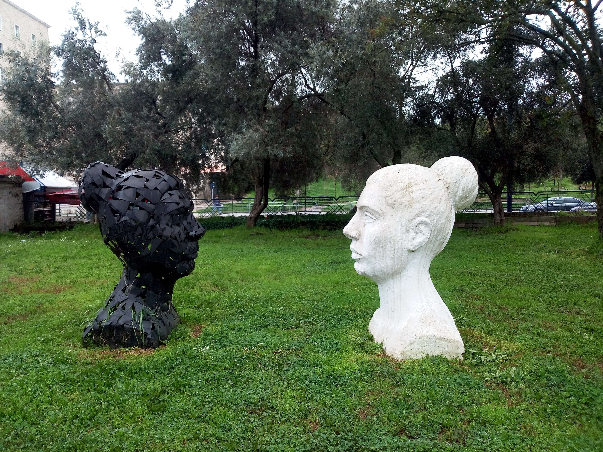

Tirana City Views
Tirana, the capital of Albania, offers a distinctive combination of historic landmarks, colorful streets, urban architecture, and everyday city life. This page brings together personal photographs taken during my visit to Tirana.

My Photo Gallery
Explore my personal travel photos of Tirana.
View All Photos ↗